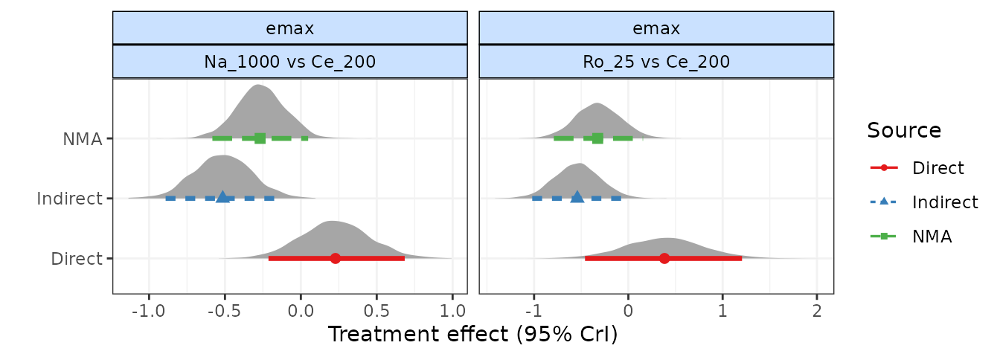
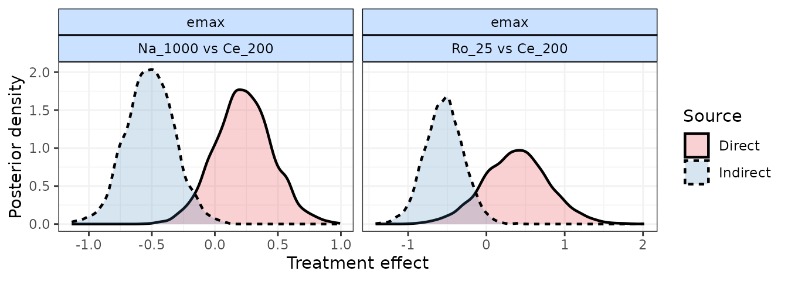
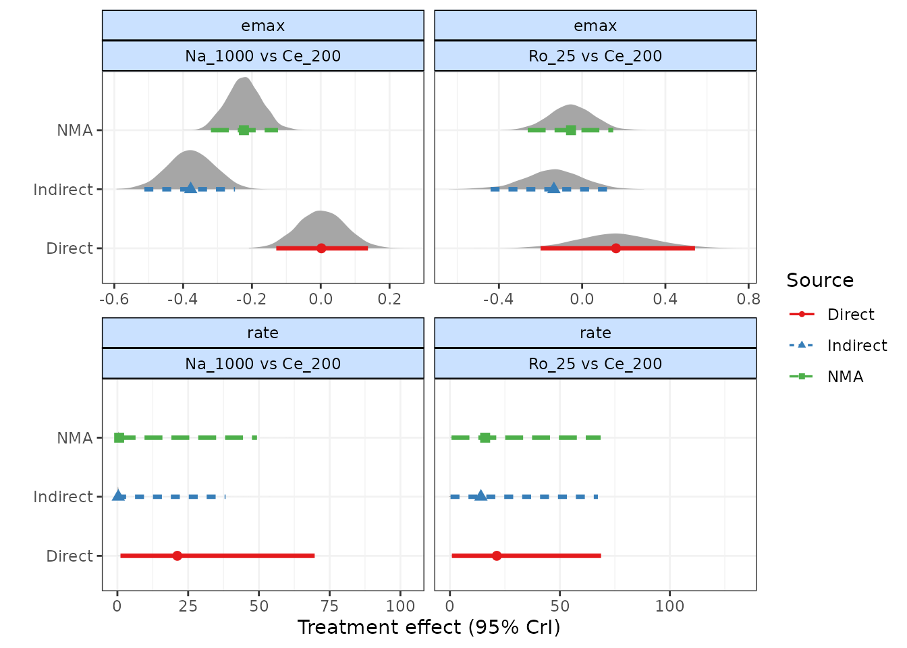

Checking for consistency
Hugo Pedder
2023-10-14
consistencychecking-3.RmdConsistency Testing
When performing an MBNMA by pooling relative treatment effects
(pool="rel"), the modelling approach assumes consistency
between direct and indirect evidence within a network. This is an
incredibly useful assumption as it allows us to improve precision on
existing direct estimates, or to estimate relative effects between
treatments that have not been compared in head-to-head trials, by making
use of indirect evidence.
However, if this assumption does not hold it is extremely problematic
for inference, so it is important to be able to test it. A number of
different approaches exist to allow for this in standard Network
Meta-Analysis (Dias et al. 2013). Two of
these have been implemented within MBNMAtime. It is
important to note that in some model specifications there is likely to
be sharing of model parameters (e.g. heterogeneity parameters,
correlation coefficients) across networks which will lead to more
conservative tests for consistency, and may lead to an inflated type II
error.
Consistency is also likely to differ depending on the model used. Failing to appropriately model the time-course function may in fact induce inconsistency in the data. “Lumping” together different time points from studies in standard NMA is known to be a potential cause of inconsistency, which is one of the reasons why accounting for time-course using MBNMA is important (Pedder et al. 2019). When performing MBNMA, this is why it is important to first try to identify the best model possible in terms of time-course and common/random effects, and then to test for consistency within that model, rather than testing for consistency in models that are known not be be a good fit to the data.
Consistency testing can only be performed in networks in which closed
loops of treatment comparisons exist that are drawn from independent
sources of evidence. In networks which do not have any such loops of
evidence, consistency cannot be formally tested (though it may still be
present). The mb.nodesplit.comparisons() function
identifies loops of evidence that conform to this property, and
identifies a treatment comparison within that loop for which direct and
indirect evidence can be compared using node-splitting (see below).
# Loops of evidence within the alogliptin dataset
network.alog <- mb.network(alog_pcfb)
#> Reference treatment is `placebo`
#> Studies reporting change from baseline automatically identified from the data
splits.alog <- mb.nodesplit.comparisons(network.alog)
print(splits.alog)
#> t1 t2 path
#> 8 3 4 3->1->4
#> 7 2 5 2->1->5
#> 6 2 4 2->1->4
#> 5 2 3 2->1->3Unrelated Mean Effects (UME) models
To check for consistency using UME we fit a model that does not assume consistency relationships, and that only models the direct relative effects between each arm in a study and the study reference treatment. If the consistency assumption holds true then the results from the UME model and the MBNMA will be very similar. However, if there is a discrepancy between direct and indirect evidence in the network, then the consistency assumption may not be valid, and the UME results are likely differ in several ways:
- The UME model may provide a better fit to the data, as measured by deviance or residual deviance
- The between-study SD for different parameters may be lower in the UME model
- Individual relative effects may differ in magnitude or (more severely) in direction for different treatment comparisons between UME and MBNMA models
UME can be fitted to any time-course parameter which has been
modelled using relative effects (pool="rel"). UME can be
specified for each time-course parameter in separate analyses, or can be
modelled all at once in a single analysis.
# Identify quantile for knot at 0.5 weeks
timequant <- 0.5/max(network.pain$data.ab$time)
# Fit a B-spline MBNMA with common relative effects on slope.1 and slope.2
mbnma <- mb.run(network.pain,
fun=tspline(type="bs", knots=timequant,
pool.1 = "rel", method.1="common",
pool.2 = "rel", method.2="common"
))
# Fit a UME model on both spline coefficients simultaneously
ume <- mb.run(network.pain,
fun=tspline(type="bs", knots=timequant,
pool.1 = "rel", method.1="common",
pool.2 = "rel", method.2="common"
),
UME=TRUE)
# Fit a UME model on the 1nd coefficient only
ume.slope.1 <- mb.run(network.pain,
fun=tspline(type="bs", knots=timequant,
pool.1 = "rel", method.1="common",
pool.2 = "rel", method.2="common"
),
UME="beta.1")
# Fit a UME model on the 2nd coefficient only
ume.slope.2 <- mb.run(network.pain,
fun=tspline(type="bs", knots=timequant,
pool.1 = "rel", method.1="common",
pool.2 = "rel", method.2="common"
),
UME="beta.2")#> [1] "Deviance for mbnma: -104.54"
#> [1] "Deviance for ume on beta.1 and beta.2: -115.5"
#> [1] "Deviance for ume on beta.1: -117.0"
#> [1] "Deviance for ume on beta.2: -115.2"By comparing the deviance (or residual deviance) of models with UME
fitted on different time-course parameters and the MBNMA model, we can
see that there is some reduction in deviance in the different UME
models. Given that deviance is lowest when UME is modelled only on
beta.1 this is suggestive of inconsistency between direct
and indirect evidence on beta.1, but perhaps also on
beta.2 given that modelling UME on this also leads to a
reduction in deviance.
Direct estimates from UME and MBNMA models can also be compared to examine in greater detail how inconsistency may be affecting results. However, it is important to note that whilst a discrepancy between UME and MBNMA results may be seen for a particular relative effect, the inconsistency is not exclusively applicable to that particular treatment comparison and may originate from other comparisons in the network. This is why consistency checking is so important, as a violation of the consistency assumption raises concerns about estimates for all treatments within the network.
Node-splitting
Another approach for consistency checking is node-splitting. This
splits contributions for a particular treatment comparison into direct
and indirect evidence, and the two can then be compared to test their
similarity. mb.nodesplit() takes similar arguments to
mb.run() that define the underlying MBNMA model in which to
test for consistency, and returns an object of
class("mb.nodesplit"). There are two additional arguments
required:
comparisons indicates on which treatment comparisons to
perform a node-split. The default value for this is to automatically
identify all comparisons for which both direct and indirect evidence
contributions are available using
mb.nodesplit.comparisons().
nodesplit.parameters indicates on which time-course
parameters to perform a node-split. This can only take time-course
parameters that have been assigned relative effects in the model
(pool="rel"). Alternatively the default "all"
can be used to split on all available time-course parameters in the
model that have been pooled using relative effects.
As up to two models will need to be run for each treatment comparison to split, this function can take some time to run.
# Nodesplit using an Emax MBNMA
nodesplit <- mb.nodesplit(network.pain,
fun=temax(pool.emax="rel", method.emax = "random",
pool.et50="abs", method.et50 = "common"),
nodesplit.parameters="all"
)
print(nodesplit)
#> ========================================
#> Node-splitting analysis of inconsistency
#> ========================================
#>
#> emax
#>
#> |Comparison | p-value| Median| 2.5%| 97.5%|
#> |:-----------------|-------:|------:|------:|------:|
#> |Ro_25 vs Ce_200 | 0.028| | | |
#> |-> direct | | 0.384| -0.460| 1.205|
#> |-> indirect | | -0.541| -1.020| -0.064|
#> | | | | | |
#> |Na_1000 vs Ce_200 | 0.007| | | |
#> |-> direct | | 0.228| -0.213| 0.684|
#> |-> indirect | | -0.515| -0.891| -0.137|
#> | | | | | |Performing the print() method on an object of
class("mb.nodesplit") prints a summary of the node-split
results to the console, whilst the summary() method will
return a data frame of posterior summaries for direct and indirect
estimates for each split treatment comparison and each time-course
parameter.
It is possible to generate different plots of each node-split
comparison using plot():
# Plot forest plots of direct and indirect results for each node-split comparison
plot(nodesplit, plot.type="forest")
# Plot posterior densities of direct and indirect results for each node-split comparisons
plot(nodesplit, plot.type="density")
As a further example, if we use a different time-course function
(1-parameter ITP) that is a less good fit for the data, and perform a
node-split on the rate time-course parameter, we find that
there seems to be a strong discrepancy between direct and indirect
estimates. This is strong evidence to reject the consistency assumption,
and to either (as in this case) try to identify a better fitting model,
or to re-examine the dataset to try to explain whether differences in
studies making different comparisons may be causing this.
This highlights the importance of testing for consistency after identifying an appropriate time-course and common/random treatment effects model.
# Nodesplit on emax of 1-parameter ITP MBNMA
ns.itp <- mb.nodesplit(network.pain,
fun=titp(pool.emax = "rel", method.emax="common"),
nodesplit.parameters="all")
print(ns.itp)
#> ========================================
#> Node-splitting analysis of inconsistency
#> ========================================
#>
#> emax
#>
#> |Comparison | p-value| Median| 2.5%| 97.5%|
#> |:-----------------|-------:|------:|------:|------:|
#> |Ro_25 vs Ce_200 | 0.09| | | |
#> |-> direct | | 0.163| -0.200| 0.542|
#> |-> indirect | | -0.136| -0.440| 0.126|
#> | | | | | |
#> |Na_1000 vs Ce_200 | 0.00| | | |
#> |-> direct | | 0.002| -0.129| 0.137|
#> |-> indirect | | -0.378| -0.513| -0.249|
#> | | | | | |
#>
#> rate
#>
#> |Comparison | p-value| Median| 2.5%| 97.5%|
#> |:-----------------|-------:|------:|------:|------:|
#> |Ro_25 vs Ce_200 | 0.396| | | |
#> |-> direct | | 21.295| 0.869| 68.722|
#> |-> indirect | | 14.079| 0.261| 67.282|
#> | | | | | |
#> |Na_1000 vs Ce_200 | 0.082| | | |
#> |-> direct | | 21.176| 1.085| 69.708|
#> |-> indirect | | 0.320| -0.088| 38.232|
#> | | | | | |
plot(ns.itp, plot.type="forest")